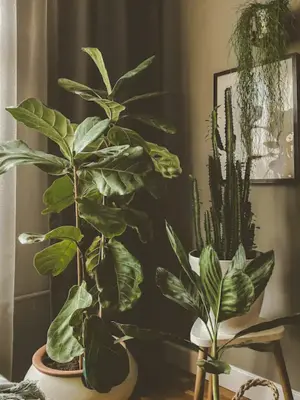
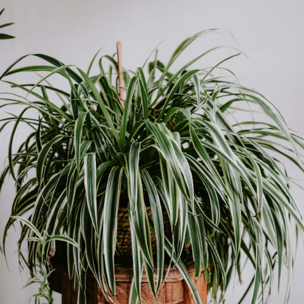
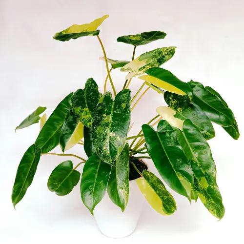

10 Easy Houseplants That Practically Grow Themselves
Updated: 10 April 2026
💡 This post may contain affiliate links. As an Amazon Associate, I earn from qualifying purchases - at no extra cost to you. I do the research so you don’t have to, and only recommend options that are reliable, good quality, and worth the price.
Living in a northern climate, low-light apartment, or busy everyday routine doesn't mean houseplants are out of reach. Many plants are far more resilient than we’re led to believe - especially when you choose varieties that naturally tolerate low light, irregular watering, and indoor conditions.
This list is for beginners, plant skeptics, and anyone who feels like plants never survive in their home. These are houseplants that don’t need constant attention and tend to thrive even when you forget about them.
What Makes a Plant “Easy”?
When I say an “easy” houseplant, I don’t mean perfect or maintenance-free. I mean a plant that can handle real life - changing light, missed waterings, and dry indoor air.
For example, some plants will start to droop when they need water and bounce back quickly once you water them (like pothos), while others store water in their leaves or roots, so they don’t mind being ignored for a while (like snake plants or ZZ plants). These kinds of traits make a big difference when you’re still learning.
For me, an easy houseplant means it:
- Tolerates low to medium light (not every room gets perfect sun all day)
- Doesn’t need frequent watering (can go a week or two without issues)
- Handles dry indoor air (especially in winter!)
- Forgives missed care routines and recovers easily
Plants that need constant humidity, precise watering, or strong direct sunlight can be beautiful, but they’re much less forgiving. Starting with easier plants helps you build confidence and understand how plants behave in your space.
Here are 10 easy houseplants that fit these criteria and are a great place to start!
1. Snake Plant (Sansevieria)

Snake plants are often considered one of the hardest houseplants to kill. Their thick, upright leaves store water, which means they can go weeks without watering and still look healthy.
They also adapt well to different lighting conditions. While they grow faster in bright, indirect light, they can survive in low-light corners where many other plants struggle. Because they grow slowly, they don’t require frequent repotting or constant attention.
Why it’s easy:
- Thrives in low to bright indirect light
- Needs watering only every 2-4 weeks (even less in winter)
- Stores water in leaves, making it very drought-tolerant
- Handles dry indoor air without issues
💡 Tip: The most common mistake is overwatering. If the leaves start to feel soft or mushy, it’s usually a sign the soil is staying too wet.
2. Rubber Plant (Ficus elastica)

Rubber plants are sturdy, low-maintenance plants known for their thick, glossy leaves. They don’t need constant attention and tend to stay stable once they adjust to your space.
They prefer bright, indirect light but can tolerate medium light, though growth will slow down. Compared to more delicate plants, their thicker leaves make them more resistant to small care mistakes.
Why it’s easy:
- Doesn’t need frequent watering (let the top soil dry out)
- Thick leaves help retain moisture
- Adapts well to indoor conditions once established
- Grows steadily without needing constant adjustments
💡 Tip: If leaves start dropping, it’s usually from sudden changes (light, temperature, or watering). Keep conditions consistent and it will stabilize.
3. Spider Plant

Spider plants are fast-growing and very forgiving, which makes them one of the easiest plants to start with. As they mature, they produce small offshoots (“babies”) that can be left hanging or propagated into new plants.
They adapt well to different indoor conditions and recover quickly from missed watering. While they grow best in bright, indirect light, they can also handle lower light without major issues.
Why it’s easy:
- Tolerates irregular watering and bounces back quickly
- Adapts to low to bright indirect light
- Fast growth with visible progress
- Easy to propagate from offshoots
💡 Tip: Brown tips are common and usually caused by dry air or minerals in tap water. It’s not harmful, but using filtered water can help reduce it.
4. Pothos

Pothos is one of the most forgiving trailing plants you can grow. It adapts easily to indoor conditions and gives clear signals when something is off, which makes it ideal if you’re still learning.
It grows well in anything from low to bright indirect light, though brighter light will give you fuller growth and larger leaves. You can let it trail, hang, or train it to climb depending on your space.
Why it’s easy:
- Shows clear signs when it needs water (leaves start to droop)
- Grows in low to bright indirect light
- Recovers quickly after underwatering
- Easy to propagate from cuttings
💡 Tip: If the vines get long with small, spaced-out leaves, it usually means the plant needs more light.
5. ZZ Plant (Zamioculcas zamiifolia)

The ZZ plant is one of the most low-maintenance houseplants you can own. It has thick, glossy leaves and stores water in underground rhizomes, which allows it to go long periods without watering.
It handles low light better than most plants and stays stable even in less-than-ideal conditions. Growth is slow, but that also means less maintenance and fewer adjustments over time.
Why it’s easy:
- Tolerates low light and indoor conditions
- Needs watering only every few weeks
- Very drought-tolerant (stores water in rhizomes)
- Stable and very low-maintenance
💡 Tip: Yellowing leaves are usually a sign of overwatering, not underwatering. When in doubt, it’s better to wait.
6. Philodendron

Philodendrons are fast-growing, adaptable plants that do well in most indoor environments. They come in many varieties, but most share the same easy-going nature and forgiving care requirements.
Depending on the type, they can grow trailing or climb if given support. They adjust well to different light conditions and don’t need perfect care to keep growing.
Why it’s easy:
- Adapts to low to bright indirect light
- Forgives inconsistent watering
- Steady, reliable growth
- Can trail or climb depending on how you grow it
💡 Tip: If stems become long with fewer leaves, it usually means the plant needs more light or support to climb.
7. Chinese Evergreen (Aglaonema)

Chinese evergreens are reliable, low -maintenance plants that handle indoor conditions with ease. They grow slowly and keep their shape without needing frequent pruning or adjustments.
They are especially well-suited for low-light spaces, where many other plants struggle. While they can tolerate brighter light, they don’t depend on it to stay healthy.
Why it’s easy:
- Tolerates low to medium light
- Needs watering only when the top soil dries out
- Slow growth means less maintenance
- Stable and adaptable to indoor environments
💡 Tip: Yellow leaves are often a sign of overwatering. Let the soil dry slightly between waterings to keep the plant healthy.
8. Jade Plant (Crassula ovata)

Jade plants are succulents that store water in their thick, fleshy leaves, making them very drought-tolerant. They grow slowly, which reduces maintenance, and can live for many years with basic care.
They thrive in bright, indirect sunlight and benefit from occasional direct sun, but they can adapt to less light if needed. Overwatering is the main risk, so it’s better to underwater than overwater.
Why it’s easy:
- Drought-tolerant - can go weeks without water
- Slow growing and low-maintenance
- Long-lived and resilient indoors
- Adapts well to indoor light conditions
💡 Tip: Let the soil dry completely between waterings. Yellowing or wrinkled leaves are signs it needs water, while soft, mushy leaves usually mean overwatering.
9. Dracaena

Dracaenas are resilient, slow to moderate growing plants that adapt well to a variety of indoor conditions. Their upright growth and structured leaves make them a visually appealing choice for corners or larger spaces.
They tolerate low to bright indirect light, though brighter spots encourage faster growth and more vibrant leaf color. Dracaenas prefer slightly drier soil between waterings and are sensitive to overwatering, which can cause root rot.
Why it’s easy:
- Low watering needs - let soil dry between waterings
- Adaptable to a range of light conditions
- Hardy, durable, and slow-growing
- Requires minimal pruning or maintenance
💡 Tip: Yellowing leaf tips usually indicate overwatering or low humidity. Trim affected leaves and adjust care gradually to keep your Dracaena healthy.
10. Parlor Palm (Chamaedorea elegans)

Parlor palms are slow growing, compact palms that thrive in low to medium light indoor environments. Their elegant, feathery fronds add a touch of greenery without requiring much attention.
They prefer evenly moist soil but tolerate occasional drying out. These palms handle dry indoor air better than many tropical plants, making them ideal for apartments and offices. Their slow growth means less frequent pruning and repotting.
Why it’s easy:
- Tolerates low to medium indirect light
- Infrequent watering needed - allow top layer of soil to dry between waterings
- Handles dry indoor air well
- Compact growth - minimal pruning or space adjustments
💡 Tip: Rotate the pot occasionally so fronds grow evenly, and wipe leaves with a damp cloth to prevent dust buildup.
Simple Tips to Keep Easy Plants Alive
Even the most low-maintenance houseplants benefit from a few consistent habits. Paying attention to their basic needs can help prevent common problems like root rot, yellowing leaves, or slow growth.
- Let the soil dry slightly between waterings
Most easy-care plants don’t like to sit in soggy soil. Stick your finger about an inch into the soil - if it feels dry, it’s time to water.
- Adjust watering in winter
Plants grow more slowly in colder months and need less water. Overwatering in winter is a common mistake that can lead to root rot.
- Use pots with drainage holes
Always choose pots that allow excess water to escape. If you like decorative pots without holes, use a nursery pot inside to keep roots safe.
- Maximize natural light
Place plants where they can get indirect sunlight whenever possible. Even low-light plants benefit from occasional exposure to brighter light.
- Monitor humidity and airflow
Indoor air can get dry, especially in winter. Keep plants away from radiators or heaters and consider occasional misting or a small humidifier for sensitive species.
- Check plants regularly
Inspect leaves and soil frequently. Early detection of pests, dry spots, or drooping leaves can save your plant from long-term stress.
Useful Tools for Caring for Your Houseplants
While you don’t need a lot of fancy equipment, a few simple tools make plant care easier and more enjoyable. Most of my pots and basic tools I actually find at the dollar store or thrift shops, and they work perfectly! Don’t forget to check your local Facebook Marketplace, too - you can often find great items for much less, or even for free. For anything you prefer to order online, here are some reliable options I’ve researched:
I usually get a standard indoor potting mix and add extra perlite for improved drainage. Choose the mix that suits your plant type and adjust with perlite if you want soil to dry faster between waterings.
View on AmazonA narrow-spout watering can allows controlled, even watering directly at the soil. Unlike a bottle or cup, it prevents overwatering, avoids splashing, and reaches the base of plants in tight indoor spaces.
View on AmazonA helpful learning tool if you’re unsure about your watering schedule. Many people find them useful, but readings can sometimes be misleading or the meter may stop working after a few months. Use it to get a feel for your plant’s needs, but over time, rely on observing the soil, lifting the pot, and watching your plant’s growth.
View on AmazonIdeal for people with busy schedules or plants that need frequent watering. These pots help maintain consistent soil moisture, reduce the risk of over- or under-watering, and make plant care less stressful without constant attention.
View on AmazonI like clear pots with drainage holes so you can see the roots and track growth. You can place them inside decorative pots without holes for a cleaner look, giving you also flexibility to change pots without repotting.
View on AmazonPerfect for low-light rooms or winter months, helping your plants continue growing when natural light is limited. There are many types of grow lights to match your needs, from small desk lamps to larger full-spectrum panels. This option is easy to start with and works well for most indoor houseplants.
View on AmazonHumidity is important not just for plants but also for our comfort, especially in dry winter months. I personally use a larger model that can be controlled from my phone, but there are many smaller, simpler options that work well for most indoor spaces.
View on AmazonMakes cleaning leaves easier, especially on tall or sprawling plants, though regular microfiber cloths work just as well!
View on AmazonNot essential, but a reusable mat keeps your space clean and organized when changing soil or repotting multiple plants. Old newspaper or a cardboard box works too.
View on AmazonFinal Thoughts
Easy houseplants don’t need perfect conditions - they just need to be the right match for your space and lifestyle. If you live in a colder climate or a light-limited apartment, these plants offer a simple, low-stress way to bring greenery into your home. Growing plants doesn’t need to be complicated. Sometimes, choosing the right plant is all it takes to get started.
Slow North Living is about gentle, beginner-friendly plant care, learning as we go, one plant at a time.